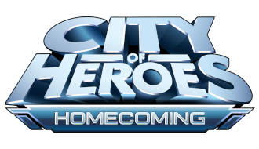
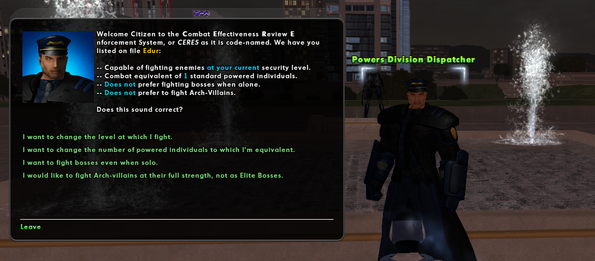
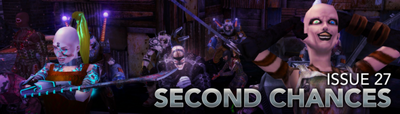
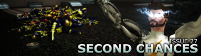
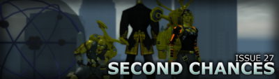
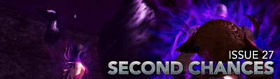

Introduction

A condescend guide to City of Heroes based on the Paragon Wiki that targets Homecoming's private servers.
City of Heroes was home to an entire multiverse of superpowered beings in a stunning, 3D graphical world. Hundreds of thousands of players took on the roles of heroes, villains, vigilantes, and rogues, while both saving and destroying worlds. City of Heroes was known for its groundbreaking level of customization, its highly community-focused features, and its abundant developer-player interaction and feedback.
Side Missions
Side missions can be obtained by the Police Radio (hero side) & Rogue Isle Protector (villain side) from any character after reaching level 5 in ether archetype. Both this and the Architect allow for unlimited replay outside of the main story lines.
Police Radio
Police Radio can be obtain from a Detective in Kings Row and later zones. It comes with three missions unique to the hero archetype:
- Rescue
- Heist/Assault Prevention
- Stop a Robbery
Rogue Isle Protector
The newspaper can be obtained in any zone from a Broker in Port Oakes and later zones. Rogue Isle Protector comes with two missions unique to villain archetype:
- Kidnapping
- Heist
Notes
- Both heroes and villains can use their radio and newspaper, respectfully, at anytime.
- Both offer fetch and boss missions.
- You can't obtain them in the starting zone.
- You can't get a side mission too high or low than your correct rank.
- Some zones will not get a signal.
- One a player completes a certain amount of missions, they will get a special assignment or heist.
External Links
Inf
Influence, Infamy, and Information, commonly known as Inf, is the currency that is earned by defeating opponents, completing missions and selling items. It is used to buy Inspirations, Enhancements, and Costumes. Inf can be traded by mail through characters of any alignment.
Inf Cap
Original
In the original, free players could only hold 25 million inf. Premium players could increase this cap using reward tokens.
- 1 Reward Token: 25,000,000 (25 million) per character (Free players occupy this tier)
- 2 Reward Tokens: 500,000,000 (500 million) per character
- 5 Reward Tokens: 1,000,000,000 (1 billion) per character
- 8 Reward Tokens: 2,000,000,000 (2 billion) per character
VIP Players have an inf limit of 2 billion regardless of how many Reward Tokens they have earned.
Homecoming
Because VIP is granted to players by default in Homecoming, all characters can have up to 2 billion Inf regardless of the amount of reward tokens they have.
Exchange
Prestige
Prestige is used for base building. Inf can be traded for Prestige at the Super Group Registrar desks in Atlas Park, or Galaxy City (hero side) and Port Oakes (villain side).
- The exchange rate is 1,000,000 inf for 2,000 prestige.
- Ideally, a player can choose to earn Prestige instead Inf by switching to Super Group Mode when at higher levels.
Understanding Inf
Inf. is used as an abstraction layer over more descriptive or intuitive currencies, such as "Credits" or "Dollars," because each hero or villain created in City of Heroes (and in general) because all have diverse range of origins that using something ore specific would not be suitable.
Examples
As illustrative examples, consider the in-game stories behind three of the Signature Heroes.
Mynx is a young, college-age woman who was granted super-powers against her will by the corrupt Crey Corporation. As a young woman, she doesn't really have a lot of financial clout. However, her repeated service to the city has ensured that when she needs resources to help fight crime, those resources will be available to her regardless of how much money (paper currency) she has on her person or in a bank account.
Mynx's earned Influence is primarily in the form of "good will" support available to her from her allies and the businesses located in Paragon City.
Manticore is an adult man who inherited a vast fortune and runs powerful businesses. His real identity is not particularly well known. As a more secretive hero, he's not likely to depend upon the good will of the city or his allies for support. Rather, he'll purchase it outright or use his existing financial assets to manufacture what he can't purchase.
Manticore's Influence is primarily in the form of his vast financial assets.
Statesman is an immortal being who's been protecting the city and the world for the better part of a century. He was a wealthy man when he began his exploits as Statesman, and we can assume that he's been responsible with that wealth. He's been active in the fight against evil for so long that he's become the very epitome of heroism to many in the city.
Statesman's Influence comprises not only the good will of the city and his extensive personal financial resources, but is also bolstered by the sheer amount of authority and expertise he wields.
External Links
Notoriety

Notoriety is a difficultly or challenge setting that affects the size and makeup of enemy spawns in (door) missions that haven't been started.
Contacts
You can change your character's notoriety anywhere in the game by interacting with a notoriety contact. Each contact goes under a different agency, organization, or division, depending on the setting. Rouge has the most diverse set.
| Contact | Setting | Expansion |
|---|---|---|
| Field Analyst | Paragon City | Base |
| Fortunata Fateweaver | Rogue Isles | Villains |
| Powers Division Dispatcher | Praetoria | Rouge |
| Resistance Operative Handler | Praetoria | Rouge |
| Mistress of Fate | Praetoria | Rouge |
Spawns
The primary factors it affects the spawn size and makeup include the experience level of the character when the mission was assigned based on the character's notoriety and number of team members.
Spawns are at their lowest in missions attempt by a solo player, generating three minions or a minion and a lieutenant. Two players will have three to give minions and a lieutenant, potentially one level higher. Players with higher notoriety produce greater spawns and sometimes bosses above the number placed by the mission designer.
Architect Entertainment
Notoriety also affects spawns at Architect Entertainment in the same way as standards missions. For example, if the character has opted to fight Archvillains or Heroes at Elite Boss difficulty, Archvillains and Heroes in Mission Architect missions will spawn at the Elite Boss rank instead.
External Links
Bases

Bases are used by Super Groups to congregate, pool resources, travel easier, and more. They were introduced and restricted to the Villains expansion until the two were merged. Bases serve as a fun and useful money sink.
Prestige
All modifications and rent are paid for in Prestige. Prestige is earned instead of Inf when switching to Super Group Mode or Exchanged for Inf at the Super Group Registrar desks in Atlas Park, or Galaxy City (hero side) and Port Oakes (villain side).
- The exchange rate is 1,000,000 Inf for 2,000 prestige.
- Ideally, a higher level player with enough Inf would want to switch to Super group Mode.
Rent
Rent is calculated every four week for each base. Rent is an in-game charge to Super Groups based on certain items they posses in their bases. Similarly to exchanging Inf, paying for rent is done at the Super Group Registrar.
Making a Functional Base
Plot
The base plot is determined the size and how many items it may have in those rooms. Larger plot sizes allow for more rooms, ect.
Energy and Control
Energy and Control are the only two attributes that affect how items function.
Energy is the power generation by means of technology or magic (arcane). Control is the ability to monitor and control varies devices.
While some items, such as storage or the invention worktable, do not require energy or control, the majority of non-decorative items require some of each. Fall of short in either category and things will stop working.
Core and Auxiliary Items
Core or primary items operate on their own. Some require energy, control, or both to function, but they will draw from the base; source is not important. Most if not all, core items connect to them.
Auxiliary items need Core items to function. They must be placed in a room that has an item of a type to connect to but does not need to be directly near it. Each Core item will only connect to a set maximum number of auxiliary items.
External Links
Issue 27
Issue 27 is the second major release for Homecoming.
Major Changes
- Sonic, Seismic Blast and Earth Manipulation manipulation
- Asymmetrical customization options
- Tour guide missions
- Dr. Aeon Strike Force
- Permanent NPC Costume Power Rewards
- Name Release - Phase 1: Warning Mode
Highlights
Page 1

- Two new story arcs featuring new characters, enemies, mission maps, badges and mechanics
- A new powerset: Sonic Manipulation
- Asymmetrical shoulder pads, stance selection, and sprint customization
- Reworks for Energy Melee, Titan Weapons, Teleportation, Trick Arrow and Blaster Secondaries
- Energy Melee for Scrappers
- Tons of improvements for PvP, including 9 new arena maps
- Expanded gamepad support
- A whole host of improvements, balance changes, and fixes
Page 2

- Tour Guide Missions
- Travel Power Updates
- Power Changes
- PvP Changes
- Coordinates and /thumbtack commands
- A whole host of improvements, balance changes, and fixes
Page 3

- Dr. Aeon Strike Force
- Difficulty/Challenge Options
- Powersets: Seismic Blast and Earth Manipulation
- Proliferation: Scrappers and Stalkers Stone Melee and Stone Armor
- Revamps: Stone Armor, Electrical Blast, and Dual Blades
- IO Sets: Slow Movement and Travel
- D-Sync Origin Enhancements
- New Emotes
- Base Items
- Costume Parts
Page 4

- Marquee Features
- New Incarnate Mission Content: Sister Valeria
- New Powersets - Symphony Control, Sonic Assault
- Name Release Policy - Phase 1: Warnings
- New Advanced Difficulty - Imperious Task Force
- Advanced Difficulty Improvements & New Reward Currency
- Permanent NPC Costume Power Rewards
- Powers & Gameplay Adjustments
- Enemy Aggro Revamp
- Attack Typing Adjustments
- New Tech: Power Toggle Suspension
- Temporal Warriors, Instant Level 50 PvP Characters
- Character Customization Improvements
- Sheathed Weapons System
- Custom Weapons Expansion
- Costume Part Proliferation & Fixes
- Arachnos Widow Costume Update
- Parkour and Blitz Movement Stances
- Walk Animation Customization
- Various Additions & Enhancements
- New Badges
- Cimerora Tour Guides
- Proliferated Emotes
- New Roleplaying & System Commands
- New AE Mission Maps, NPCs, Custom Enemy Powersets, and new Advanced Enemy Customization
- Fort Trident & The Crucible Revamp
- Roleplaying Pub(V) and Luau(H) Area Additions